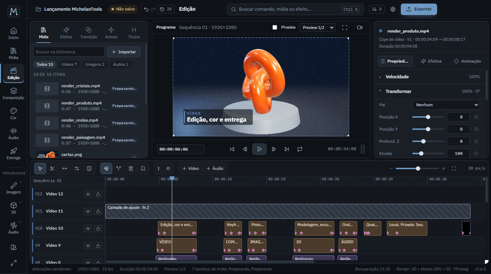
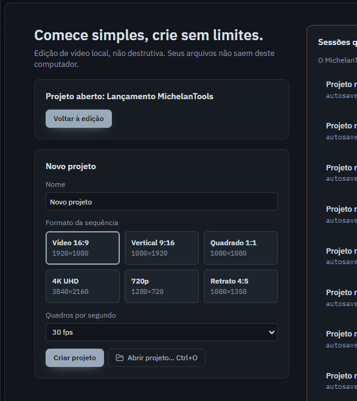
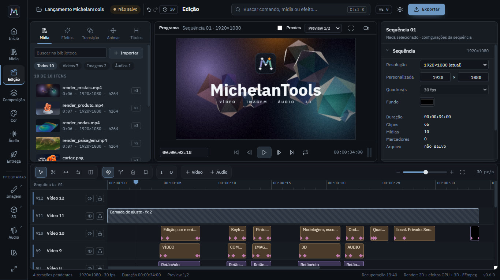
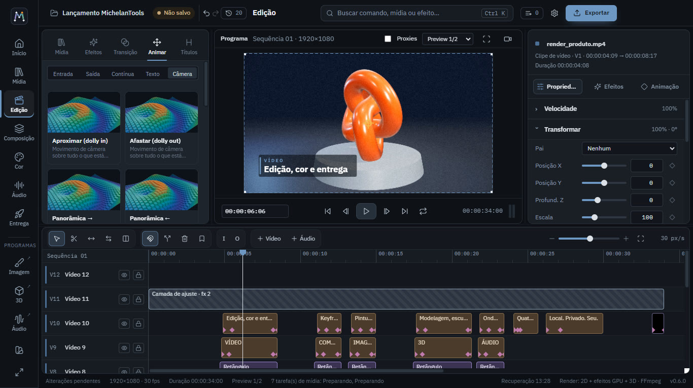
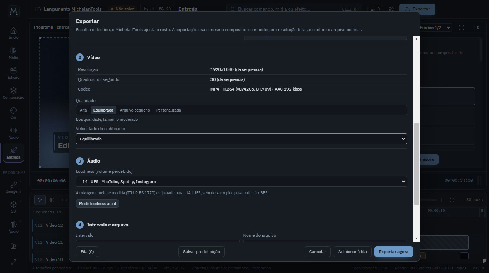

Seu primeiro vídeo, sem pressa.
Este guia percorre um projeto do começo ao fim: criar, importar, montar, dar vida e exportar. Leva uns quinze minutos, e você pode seguir com seus próprios arquivos.
Conheça a tela
A janela tem cinco regiões. Você não precisa decorar nada: passe o mouse sobre qualquer botão para ler o que ele faz e qual é o atalho.

Trilho, à esquerda
As páginas (Início, Mídia, Edição, Composição, Cor, Áudio, Entrega) e os programas Imagem, 3D e Áudio, que abrem em janela própria.
Biblioteca
Suas mídias, e também os efeitos, transições, animações e títulos, cada um com prévia.
Monitor, no centro
Mostra o quadro onde está a agulha. É exatamente o que vai sair no arquivo.
Inspetor, à direita
Tudo sobre o que está selecionado, em três abas: Propriedades, Efeitos e Animação.
Timeline, embaixo
As trilhas de vídeo ficam em cima e as de áudio embaixo. A agulha laranja marca o tempo.
Busca, no topo
Ctrl+K encontra qualquer comando, mídia ou efeito pelo nome.
Crie o projeto
Na página Início, dê um nome e escolha o formato: 16:9 para YouTube, 9:16 para Reels e Shorts, 1:1 para feed. A taxa de quadros padrão (30) serve para quase tudo.

Importe suas mídias
Arraste arquivos do Explorer para a janela, ou clique em Importar (Ctrl+I). As miniaturas e formas de onda aparecem em segundos. Formatos difíceis de editar ganham uma cópia otimizada, e o original continua sendo usado na exportação.

Monte e corte
Arraste as mídias para a timeline. Para cortar, use a lâmina (B) e clique no ponto do corte, ou pare a agulha e aperte S. Para encurtar, puxe as bordas do clipe com a seleção (V).
Clipes em trilhas mais altas ficam por cima: é assim que títulos e logos aparecem sobre o vídeo.
Efeitos, transições e animação
Selecione um clipe e abra a aba Efeitos da biblioteca. Cada miniatura mostra o antes e o depois. Passe o mouse para ver o efeito em ação e clique para aplicar. Ajuste a intensidade no inspetor, aba Efeitos.
Na aba Animar, escolha uma entrada, saída ou animação contínua. Na aba Transição, arraste uma até o começo de um clipe.

Mova a câmera
Na aba Animar, escolha Câmera e clique num movimento: aproximar, órbita, grua, câmera na mão. O programa cria uma camada de câmera no topo, que enquadra tudo o que está abaixo.
Para dar profundidade, mude a Profundidade Z das camadas no inspetor: o que estiver mais perto anda mais que o fundo.

Exporte
Clique em Exportar, no canto superior direito. Escolha um destino e o programa sugere formato, qualidade e volume, mostrando antes o tamanho e o tempo estimados. Exportações vão para uma fila, e você pode continuar editando.

Atalhos que valem a pena
Agora é com você
Cada programa tem a sua página, com mais detalhes. E se travar em algum ponto, passe o mouse sobre o botão: a dica explica o que ele faz.
Pedir acesso